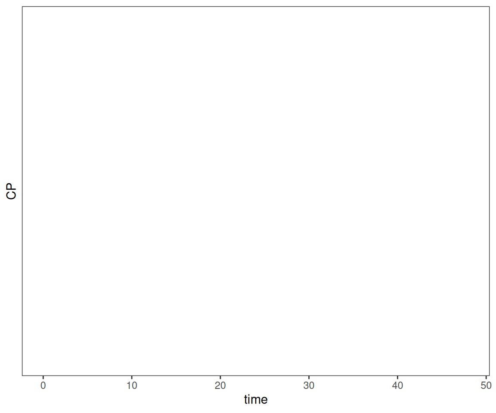
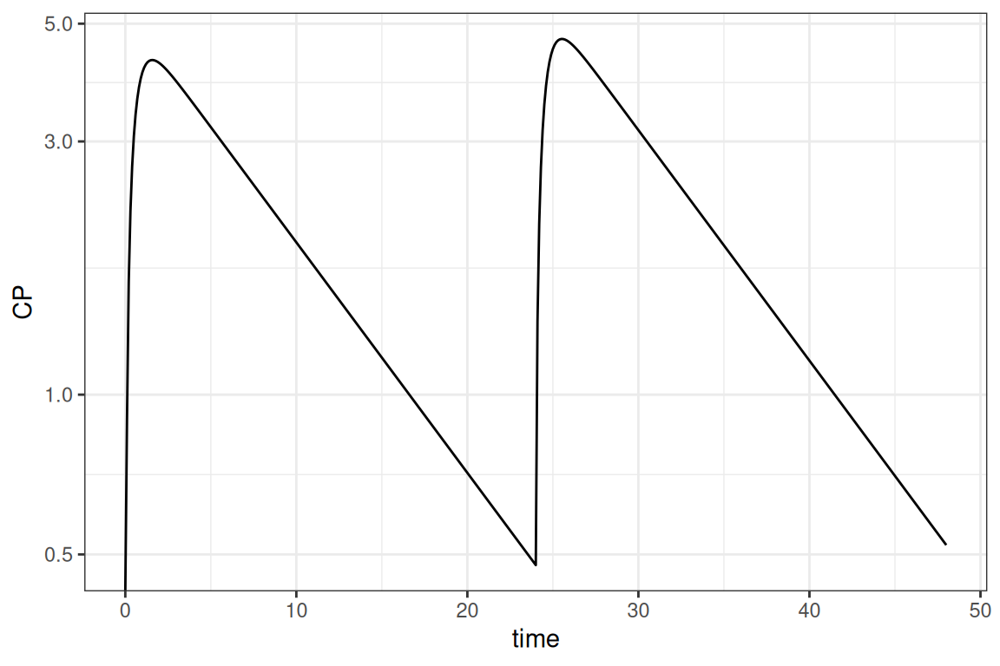
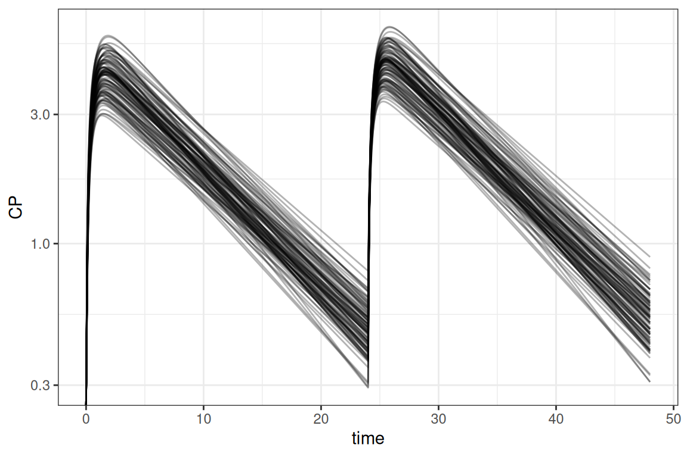
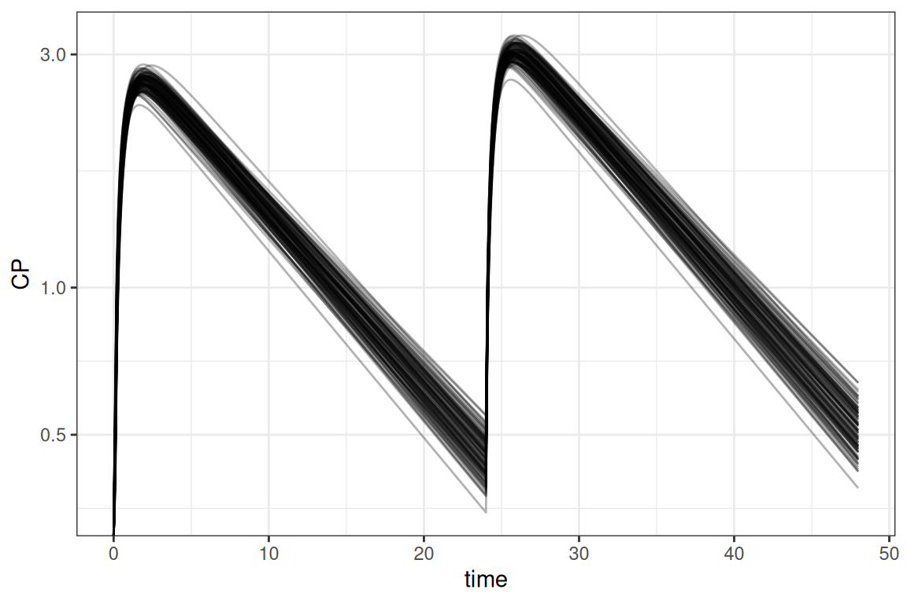
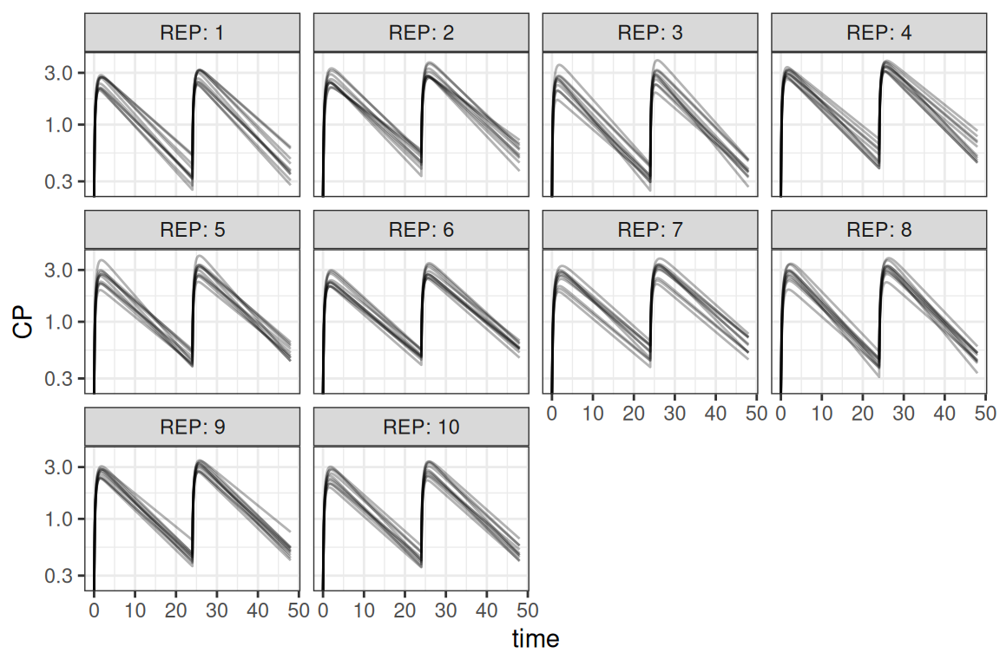
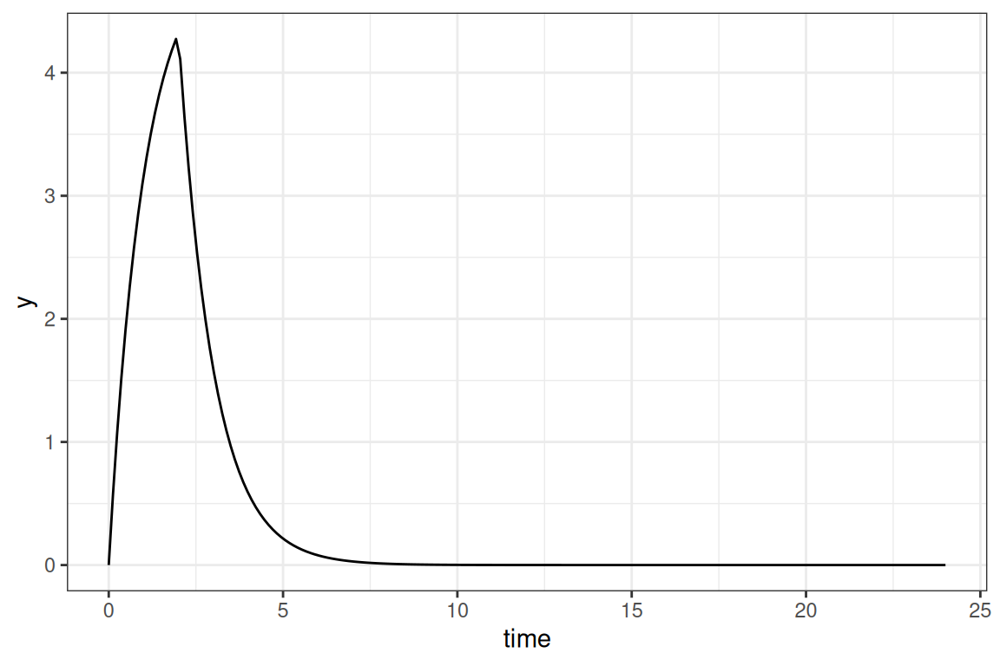

library(amp.sim)
convert_nonmem("run1.mod", "example1", type_return = "deSolve")
# convert_nonmem("run1.mod", "example2", type_return = "rxode2")
# For rxode2/nlmixr2 it is advised to let the nonmem2rx package
# do the translation, added value is that the model can also be use for fitting!
convert_nonmem("run1.mod", "example2", type_return = "nonmem2rx")
convert_nonmem("run1.mod", "example3", type_return = "mrgsolve")Introduction
This vignette describes how pharmacometric models can be simulated in R by using the amp.sim package. In the field of pharmacometrics, models are often estimated using the NONMEM software tool. However, simulating such models is more often done in R. This method is commonly preferred because an entire exercise can be done in one environment. There might also be advantages with respect to efficiency (object sizes and speed).
When simulating in R there are different packages available to do so. Although there are more, the amp.sim package support the following regularly used packages, each having their own pros and cons:
-
deSolvepackage: Widely used general solver package. Can be slow when models are not compiled and does not have specific features for PKPD modeling. For simple models this package can be a good choice -
rxode2package: Package specified towards PKPD modeling. Simulations are fast and is the backbone for the estimation packagenlmixr2. For models that are estimated and simulated solely in R this can be a good choice -
nlmixr2package: This is is a similar method as the previous, however the syntax is created using thenonmem2rxpackage. This will create a model not only suitable for simulations but also directly for estimation using thenlmixr2package. -
mrgsolvepackage: Package specified towards PKPD model. Simulations are also fast. Syntax for models is highly comparable to NONMEM syntax. When comparing with NONMEM syntax this can be good choice
This vignette highlights how the different packages can be used and provide some examples for different type of simulations.
Model translation
A main feature of the package is the translation of NONMEM models to one of the frameworks discussed above. Within this translation step, the model itself is translated and a starting point for controlling the simulations is provided. To perform the translation, the convert_nonmem function can be used. This function will translate the model as good as possible and create all applicable code to perform an initial simulation:
When the function is called, by default a file including the model will be generated (e.g. example1.r) and a separate file to control the simulation (e.g. example1_control.r). The control file can usually be directly submitted in R to perform a simple simulation and plot the result. In case final estimates from a NONMEM run should be used for the simulations, a NONMEM ext file can be provided to the function.
Be aware that the function tries to translate a NONMEM model as good as possible. There might however be cases that manual adaptations are necessary, simply because they are not supported by the package that performs the simulation. Depending on the package being used for simulation, the following items might need additional attention:
- Handling of (time-varying) covariates
- Usage lag time and bio-availability (mainly applicable for deSolve)
- Handling of mixture models
- Handling of inter-occasion variability
- Handling of NONMEM reserved keywords or syntax
For more information on this see Considerations for translating models.
Simulation of typical subject
For the remainder of the vignette, a translation to an mrgsolve model is used. The main principles however holds for the other packages as well. The step below shows the original model and the result of the translated model:
;; Importance: 0
;; Description: 1 CMT PK model with oral absorption
$PROB 1 CMT PK model with oral absorption
$INPUT
STUDYID ID TRT CMT AMT TIME TAFD TALD DV EVID MDV CNTRY SEX AGE WEIGHT HEIGHT BMI FLAGPK STIME
$DATA NM.theoph.02B.csv IGNORE=@
$SUBROUTINES ADVAN6 TOL=3
$MODEL
COMP = (ABS)
COMP = (CENTRAL)
$PK
COV1 = (WEIGHT/70)**THETA(4)
KA = THETA(1) * COV1 * EXP(ETA(1))
CL = THETA(2) * EXP(ETA(2))
V = THETA(3)
S2 = V
K20 = CL/V
F1 = 1
$DES
CP = A(2)/V
DADT(1) = - KA*A(1)
DADT(2) = KA*A(1) - K20*A(2)
$THETA
(0,.1) ; KA (1/h)
(0,2) ; CL (l/h)
(0,1) ; V (l)
0.2 ; effect of WT
$OMEGA
.01 ; ETA KA
.02 ; ETA CL
$ERROR
Y = F * (1 + EPS(1))
IPRED = F
$SIGMA
.1 ; Prop. error
$EST METHOD=1 INTERACTION MAXEVAL=9999 PRINT=5 NOABORT POSTHOC
$COV COMP
$TABLE ID TIME ETA1 ETA2 KA CP NOPRINT ONEHEADER FILE=par
library(amp.sim)
convert_nonmem(system.file("example_models/PK.1CMT.ORAL.COV.mod",package = "amp.sim"),
"example", type_return = "mrgsolve", mod_return = "CP")$PLUGIN autodec nm-vars Rcpp
$PROB 1 CMT PK model with oral absorption
$PARAM
THETA1 = 0.1, THETA2 = 2, THETA3 = 1, THETA4 = 0.2, WEIGHT = -999
$CMT
A1 A2
$PK
COV1 = pow((WEIGHT/70), THETA(4)) ;
KA = THETA(1) * COV1 * exp(ETA(1)) ;
CL = THETA(2) * exp(ETA(2)) ;
V = THETA(3) ;
S2 = V ;
K20 = CL/V ;
F1 = 1 ;
A_0(1) = 0;
A_0(2) = 0;
$DES
CP = A(2)/V ;
DADT(1) = - KA*A(1) ;
DADT(2) = KA*A(1) - K20*A(2) ;
$OMEGA @block
0.01
0 0.02
$SIGMA @block
0.1
$ERROR
F = A(2)/S2;
Y = F * (1 + EPS(1)) ;
IPRED = F ;
$CAPTURE CPWhen we run the control script (without adaptations) and plot the results:
Warning in scale_y_log10(): log-10 transformation introduced infinite values.Warning: Removed 4800 rows containing missing values or values outside the scale range
(`geom_line()`).
We see that in this case, that the simulations are empty. This is because the model has a covariate of weight. Because the translation does not take into account the dataset, the package cannot set a valid value and is therefore set to -999. Below we can see the simple addition to get a result. Other adaptations showcased are, simulate a single subject without random effects (using zer0_re):
library(ggplot2)
parm <- c(WEIGHT = 70)
mod <- param(mod,parm)
out <- zero_re(mod) |> ev(evnt) |> mrgsim(end = 48, delta = 0.1, nid=1)
ggplot(out@data,aes(time,CP)) + geom_line() + scale_y_log10() + theme_bw()
Take into account that in the result above the initial estimates from the model are used. We could provide the ext file to use final estimates
Simulation of population
In most cases the simulation should be performed for more than 1 subject. There is some variation what the different subjects represent. It could be either inter-individual variability (IIV), uncertainty or a combination of both. This section shows how various combinations can be handled.
Simulations including only IIV
The situation where you want to simulate with only IIV, is the easiest and is already integrated within the mrgsolve package. By default, when a NONMEM model is translated, the model matrices included in the model. This is also used by the mrgsim function to sample values for the model. As shown in the first example the original code was adapted to set IIV to 0. If we do not do this and set a number of individuals to simulate we can easily include IIV
parm <- c(WEIGHT = 70)
mod <- param(mod,parm)
out <- mod |> ev(evnt) |> mrgsim(end = 48, delta = 0.1, nid=100)
ggplot(out@data,aes(time,CP, group=ID)) + geom_line(alpha=0.3) +
scale_y_log10() + theme_bw()
Simulations including only uncertainty
In case we only want to simulate with uncertainty, we need to disregard IIV in the same way as in the first example. Furthermore we need to sample values from the covariance matrix for the uncertainty. The amp.sim package provides a function to do so (sample_par). Once we have the sampled parameters, it is a matter to simulate each row of the data frame with the sampled parameters. In this example the dplyr package is used to accomplish this:
library(dplyr)
parm <- c(WEIGHT = 70)
mod <- param(mod,parm)
# sample from uncertainty and apply simulations
extf <- system.file("example_models/PK.1CMT.ORAL.COV.ext",package = "amp.sim")
covf <- system.file("example_models/PK.1CMT.ORAL.COV.cov",package = "amp.sim")
parms <- sample_par(ext = extf, covmat = covf, nrepl = 100, uncert = TRUE) |>
rename_with(~ sub("S", "", .x))
dosim <- function(df){
zero_re(mod) |> ev(evnt) |>
param(c(unlist(df),parm)) |>
mrgsim_df(end = 48, delta = 0.1, nid=1) |>
mutate(ID = unique(df$ID))
}
out <- parms |> group_by(ID) |>
group_map(~dosim(.x),.keep=TRUE) |> bind_rows()
ggplot(out,aes(time,CP,group=ID)) + geom_line(alpha=.3) +
scale_y_log10() + theme_bw()
Simulations including IIV and uncertainty
For larger clinical trial simulations it is often necessary to simulate including both IIV and uncertainty. This section describes a way to do so. Also running these types of simulation can be computationally intensive. To speed up the simulation an example is included that uses the parallel package, although various other frameworks could be used to multi-thread the simulations. This example combines the examples above where in this case 10 trials are simulated for 10 subjects each
parm <- c(WEIGHT = 70)
extf <- system.file("example_models/PK.1CMT.ORAL.COV.ext",package = "amp.sim")
covf <- system.file("example_models/PK.1CMT.ORAL.COV.cov",package = "amp.sim")
parms <- sample_par(ext = extf, covmat = covf, nrepl=10, uncert=TRUE)
parms <- setNames(parms,sub("S","",names(parms)))
library(parallel)
cl <- makeCluster(getOption("cl.cores", 7))
clusterExport(cl, c("evnt","parms","mod","parm"))
out <- parLapply(cl, 1:nrow(parms),function(x){
library(mrgsolve)
ret <- mod |> ev(evnt) |> param(c(unlist(parms[x,]),parm)) |>
mrgsim_df(end = 48, delta = 0.1, nid=10)
ret$REP <- unique(parms$ID[x])
ret
})
stopCluster(cl)
out <- do.call(rbind,out)
ggplot(out,aes(time,CP,group=ID)) + geom_line(alpha=.3) +
scale_y_log10() + facet_wrap("REP",labeller = "label_both") +
theme_bw()
For running in parallel, the following steps are important:
- Create a cluster object where the numbers of cores are specified (
makeCluster) - Exporting of objects to the cluster, so each worker has access to all objects used in the calculations (
clusterExport) - Performing a special kind of lapply for parallel processing (
parLapply) - Let R know that the cluster calculations are done (
stopCluster)
It is some extra work to set-up a ‘parallel’ script, but this can really pay-off with drastically decreasing run-times.
Within the examples above, weight is kept constant for simplicity. Obtaining valid covariates can be handled in different ways. There are different ways of sampling values and provide this to the simulation functions. Please refer to the help pages of the different packages for additional guidance.
In the example above, the values are sampled within the model. It is also possible to perform all sampling within R using the sample_par function. In case a clinical trial simulation should be done using a combination of replicates and subjects, it is more convenient to use the sample_sim function instead. This function is a wrapper around sample_par but makes it easier to make a combined sampling dataset of replicates and subjects.
Using a template model
In case a closed form model should be simulated, the previous mentioned methods do not work. For these cases different template models are present in the amp.sim package. It includes 1 and 2 compartment models for IV, infusion and extra-vascular dosing, parameterized using rate constants or CL/V, and as analytical solution or differential equations. The tmpl_model function can be used without arguments to see what is available:
[1] "ana1CMTbolusC.tmp" "ana1CMTbolusK.tmp" "ana1CMTivC.tmp"
[4] "ana1CMTivK.tmp" "ana1CMToralC.tmp" "ana1CMToralK.tmp"
[7] "ana2CMTbolusC.tmp" "ana2CMTbolusK.tmp" "ana2CMTivC.tmp"
[10] "ana2CMTivK.tmp" "ana2CMToralC.tmp" "ana2CMToralK.tmp"
[13] "des1CMTbolusC.tmp" "des1CMTbolusK.tmp" "des1CMTivC.tmp"
[16] "des1CMTivK.tmp" "des1CMToralC.tmp" "des1CMToralK.tmp"
[19] "des2CMTbolusC.tmp" "des2CMTbolusK.tmp" "des2CMTivC.tmp"
[22] "des2CMTivK.tmp" "des2CMToralC.tmp" "des2CMToralK.tmp" A model can be provided to the function, in which case the simulation code can be added in the current script right after the function call (when working in Rstudio), within the console or as a string:
tmpl_model("ana1CMTivC.tmp")When submitting the lines of code you will directly get an initial simulated curve:
library(ggplot2)
ana1CMTiv <- function(Dose,pars,t,dur){
C <- 1/pars['V']
L <- pars['CL']/pars['V']
ifelse(t <= dur,
(Dose/dur) * C / L * (1-exp(-L * t)),
(Dose/dur) * C / L * (1-exp(-L * dur)) * exp(-L * (t-dur))
)
}
pars <- c(CL=1,V=1)
times <- seq(0,24,length.out=200)
out <- mdose(Dose = 10, tau = 24, ndose = 1, t = times,
func = ana1CMTiv, pars = pars, dur = 2)
ggplot(out,aes(time,y)) + geom_line() + theme_bw()
This method can be a lot faster for models with an analytical solution, though simulating multiple doses is a bit more of a hassle. For these situations the mdose helper function can be used to perform superposition. Finally, a simple example is shown how these models can be rewritten for simulating a population:
samp <- data.frame(CL=rnorm(100,10,1),V=rnorm(100,5,0.5))
out <- lapply(1:nrow(samp), function(x){
data.frame(mdose(Dose=10,tau=24,ndose=1,t=times,func=ana1CMTiv,
pars=unlist(samp[x,]),dur=2),ID=x)
})
out <- do.call(rbind,out)Final thoughts
Simulating entirely in R can be quite some work. The amp.sim can help in reducing the amount of work to rewrite everything to R, and makes it easier to perform a simple simulation. Because R is different from NONMEM there are important things to take into account. When the simulations become larger it can also become more difficult to perform the simulation in R and the run-times can get out of hand. But the usage of template models (mainly the ones with an analytical solution) and the parallel package can help in optimizing performance.